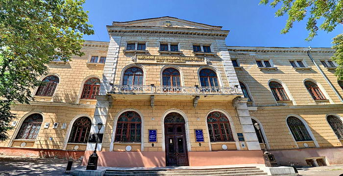

Я, Іванов Михайло Русланович, народився 24 липня 2007 року в м. Одеса.
У 2014 році пішов у перший клас ЗОШ І — III ступенів № 77 м. Одеса. У 2025 році після закінчення школи вступив до Одеського Національного Університету на математичний факультет, спеціальність «Прикладна математика».
Маю перший розряд із шахів, та синій пояс з дзюдо.
Батько, Іванов Руслан Вітальович, 1970 року народження, працює програмістом в MTB банку у місті Одеса.
Мати, Іванова Наталя Олексіївна, 1974 року народження, працює інспектором з кадрів в КНП "КДЦ № 6" ОРМ.
Брат, Іванов Дмитро Русланович, 1997 року народження, працює програмістом в якійсь Британській IT компанії.
Я та мої близькі родичі під судом та слідством не перебували.
Зараз проживаю із братом за адресою: м. Одеса, вул. Незалежності, 21, кв. 48. Тел. +380976919107. Паспорт серія № 09858, виданий РУ МВС України в м. Одеса 21 жовтня 2025 року.

4 березня 2026 року (Підпис) М. Р. Іванов